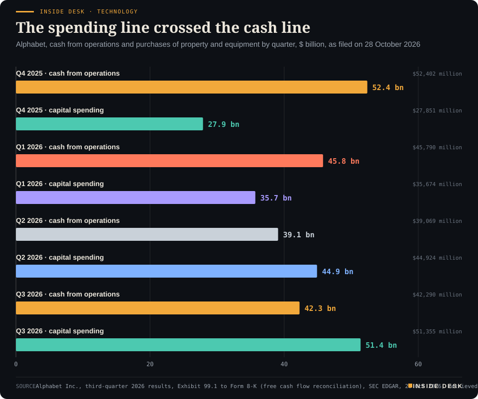
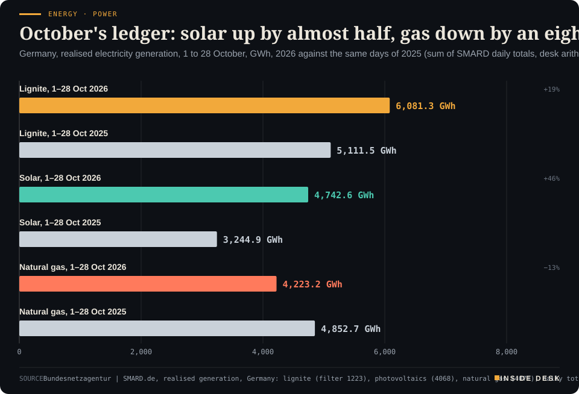
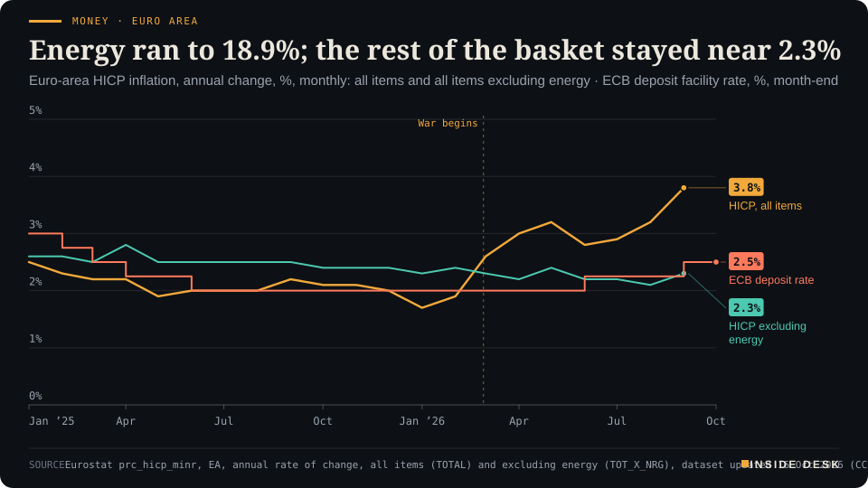
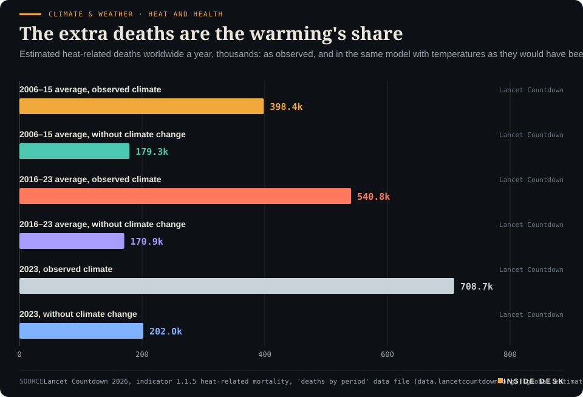

Inside Desk ePaper, Evening ePaper · Thu 29 Oct 2026
Thursday, 29 October 2026Always free
Inside Desk
Evening ePaperPublished 17:30 CET · Berlin
Lead · Tech & Compute
Google's parent earned more from operations than ever and still spent $9.1 billion more cash than it took in. The share price fell on the headline; the filing explains it line by line.
The ECB held at 2.50% and Christine Lagarde will step down on 7 February 2027. Alphabet's capital spending ran past its operating cash, Israel's count is complete and still short of 61, and German solar output rose 46% in October. Eleven desks, every number sourced.
The ECB held at 2.50% and Christine Lagarde named 7 February as her last day, Alphabet's capital spending outran its operating cash, and Germany's October ran on more sun and less gas: the people at the top changed, and the ledgers kept counting.
Geo-economics · p. 5
Markets & Macro · p. 6
Energy & Industry · p. 9
Climate & Weather · p. 17
The day in one sentenceThe ECB held at 2.50% and Christine Lagarde named 7 February as her last day, Alphabet's capital spending outran its operating cash, and Germany's October ran on more sun and less gas: the people at the top changed, and the ledgers kept counting.
ContentsInside Desk · Evening ePaper29 October 2026
The ECB held at 2.50% and Christine Lagarde will step down on 7 February 2027. Alphabet's capital spending ran past its operating cash, Israel's count is complete and still short of 61, and German solar output rose 46% in October. Eleven desks, every number sourced.
11 edition pieces · 11 desks · Published 17:30 CET, 29 October 2026
23 ePaper extras, added , 29 October. They appear only in the ePaper and carry their own time.
17:30 Evening ePaper, updated live until 22:30 with an “Updated” time and a Latest page
Sun 10:00 The Sunday Magazine
Berlin time. Every issue is free.
How to read it
Swipe, use the arrow keys or the page strip. Tap any headline for the reading view. Press / to search, t for contents, +/− to zoom. Download the PDF.
LatestInside Desk · Evening ePaper29 October 2026
Latest
Live: this page and the issue are updated until 22:30 Berlin time.
Climate & Weather: In-fa upgraded to a super typhoon again at 150 mph; damaging winds now reach further
LeadInside Desk · Evening ePaper29 October 2026
Tech & Compute · Lead · 3 min
Google's parent earned more from operations than ever and still spent $9.1 billion more cash than it took in. The share price fell on the headline; the filing explains it line by line.
On Thursday the market read Alphabet’s third-quarter results the way a headline reads: earnings per share missed, and the shares fell about 13% in early New York trading, on course for the company’s worst reaction to results since it listed in 20042. The filing behind it reads differently. It is not the story of a business that stopped working. It is the story of a business that is spending faster than it collects, and of one line below the operating profit that swung hard.
Start with what went right, because the filing does. Revenue rose 25% to $127.6 billion1. Operating income rose 30% to $40.6 billion, an operating margin of 31.8%1. Google Cloud brought in $30.7 billion, up 103% on a year earlier, and its operating income rose from $3.6 billion to $11.1 billion1. Desk arithmetic: the cloud business now keeps about 36 cents of operating profit from every dollar of revenue, against about 24 cents a year ago. “We had a strong quarter and are now on a half-trillion dollar revenue run rate,” said the chief executive, Sundar Pichai1.
So why the miss? Net income fell from $35.0 billion to $26.2 billion, and earnings per share from $2.87 to $2.121. The reason sits in one line: “other income (expense), net” moved from a gain of $12.8 billion a year ago to a loss of $8.2 billion this quarter1. Desk arithmetic: a swing of almost $21 billion, larger than the whole fall in net income. That line holds things outside the day-to-day business, and it can move a long way in either direction. If you read only the earnings-per-share headline, you read the noisiest number on the page.
The more durable story is the cash, and the filing sets it out quarter by quarter in its own reconciliation table1:
Inside Desk · TechnologyThe spending line crossed the cash lineAlphabet, cash from operations and purchases of property and equipment by quarter, $ billion, as filed on 28 October 2026

Bar chart of Alphabet's quarterly cash from operations and capital spending. In Q4 2025 cash from operations was $52.4 billion against capital spending of $27.9 billion; in Q1 2026, $45.8 billion against $35.7 billion; in Q2 2026, $39.1 billion against $44.9 billion. In the latest quarter, Q3 2026, cash from operations was $42.3 billion and capital spending $51.4 billion, leaving free cash flow of minus $9.1 billion.
Source: Alphabet Inc., third-quarter 2026 results, Exhibit 99.1 to Form 8-K (free cash flow reconciliation), SEC EDGAR, 28 Oct 2026, retrieved 29 Oct 2026. Figures rounded to $0.1 billion · CSV
In the last three months of 2025, Alphabet’s operations brought in $52.4 billion and it spent $27.9 billion on property and equipment1. Since then the two lines have crossed. In the third quarter of 2026, operations brought in $42.3 billion and capital spending was $51.4 billion, leaving free cash flow of minus $9.1 billion1. Desk arithmetic: capital spending was about 121% of cash from operations, and more than twice the $24.0 billion spent in the same quarter a year earlier. Over the past twelve months free cash flow was still positive, at $19.7 billion1, but the direction is plain.
The building is not finished, and part of it is waiting on other people. Alphabet’s finance chief, Anat Ashkenazi, told analysts that outside computing power “came online only at the very end of Q3”3. …
Geo-economicsInside Desk · Evening ePaper29 October 2026
Geo-economics · 2 min
Putin closed his Africa summit with a doubling target and a trade total. The Kremlin transcript gives the speech; the arithmetic underneath it is smaller and steadier.
The third Russia–Africa summit ended in Moscow on Thursday with representatives of 48 African countries, 22 of them heads of state, according to The Moscow Times2. Opening the plenary in the Grand Kremlin Palace, Vladimir Putin said Russia’s trade with African states “exceeded $27 billion last year” and had grown by 50% since the previous summit1. A day earlier he said it could pass $50 billion in the near future, which, as Vedomosti noted, means at least doubling it3.
Now read the same numbers from the other side of the desk. The Moscow Times reports that the $27 billion was 2.4% less than in 2024, and that trade with the entire continent accounts for just 3.9% of Russia’s foreign commerce2. Putin has promised a doubling since at least 20192. None of that makes the relationship small for the countries involved; it makes the target a speech, not a forecast.
The more interesting line was about factories. “Our companies are simply interested in moving certain production operations to African countries,” Putin said, adding that this fits Russia’s interests “when scores of sanctions are placed on the Russian economy”2. He named no company2. If it happens, it will show up in the dull places first: investment approvals, customs codes and certificates of origin in the host countries.
The paperwork that did appear is real enough. Presidential adviser Anton Kobyakov said more than 60 agreements were signed, not counting documents classed as commercial secrets, and that some 1,200 business representatives from about 630 companies took part3. In the transcript, Putin also put the rouble’s share of trade settlements with African countries at 85% and Russian grain deliveries to Africa at more than 18 million tonnes in 20251.
For you, the practical point is modest. Summits produce targets; customs offices produce statistics. …
Geo-economics · Short item · ePaper extra, added
Oil eased on Thursday morning as a reported letter to Tehran was weighed against a denial from Washington. UBS's reasoning for high prices rests less on headlines than on stocks, freight and tankers.
Brent slipped to $114.10 a barrel at 07:48 UAE time on Thursday, 04:48 in Berlin, after settling at $115.32 on Wednesday, up 1.3%1. West Texas Intermediate traded above $101 after a Wednesday close of $102.781. The trigger was the reported letter from Vice President JD Vance to Mohsen Rezaei; President Trump played it down, saying it concerned “medical supplies and various things”1.
The headline moved the price by cents. The more durable argument came from a bank research note. …
Geo-economics · Brief · ePaper extra, added
More than 60 agreements were signed at the Russia–Africa summit and economic forum in Moscow, presidential adviser Anton Kobyakov told the closing press conference, “without counting documents that constitute a commercial secret”1. He put attendance at more than 3,500 people from 74 countries, with over 1,200 business representatives from about 630 companies1. One concrete example: Russia and Uganda signed a mutual visa waiver for holders of diplomatic and service passports1.
Putin, for his part, said 47 African countries qualify for the Eurasian Economic Union’s tariff preferences, and that duties have been cut to zero for 32 of them2. Those are the numbers worth checking next year, in customs data rather than communiqués. A visa waiver for diplomats is small; it is also the kind of agreement that actually gets used.
Markets & MacroInside Desk · Evening ePaper29 October 2026
Markets & Macro · 2 min
A rate hold and a resignation in Frankfurt moved the currency to its lowest since May. A strong American GDP print barely moved anything.
Thursday handed markets three pieces of news, and only one of them moved a price much. The euro edged down to $1.1125 after the European Central Bank held its deposit rate at 2.50%, Reuters reports1. It has lost almost 2% against the dollar this month and 2.5% against sterling1. Investors hold their biggest short position on the euro in a decade, almost $19 billion1.
What moved it. Two Frankfurt items came on the same day: a hold that read as cautious, and Christine Lagarde’s announcement that she will leave on 7 February 20272. Markets had gone into the meeting pricing about a 76% chance of a December rise, ActionForex notes, so a statement stressing stable underlying inflation read as relatively dovish2. CNBC, citing LSEG data, had money markets at about 67% for December after the announcement3. Euro-area government bond yields edged lower too1. ActionForex is careful on cause: because the resignation came before the rate decision, the two effects “cannot be separated precisely”2.
What did not move. The United States reported third-quarter growth of 3.4% annualised, above the 3.2% expected, and headline PCE inflation of 3.6% in September2. Either could have lifted yields. The two-year Treasury stayed near 4.687% and the ten-year near 5.00%, with a December Fed rise priced at about 83%, against about 85% a day earlier2. Desk arithmetic: the market had already paid for the news, so the receipt changed little.
The calm point. Europe’s stocks did not join the euro’s mood: the STOXX 600 remained about 1% higher as the ECB held, Reuters reports1. A weaker currency on a leadership date, with bonds and shares orderly, is a market doing its accounting in public, not a run. For you, a softer euro makes dollar-priced fuel a little dearer and European exports a little cheaper; both effects arrive slowly. Nothing here is investment advice.
Markets & Macro · Short item · ePaper extra, added
Alphabet's fall hit the Nasdaq. It did not send money running for cover, and that is the more useful finding.
Alphabet fell more than 13% in early US trading on Thursday after its results showed disappointing search revenue and a sharp rise in cash burn on AI, Reuters reports, and the Nasdaq opened 1.3% lower2. That was the loud part. The quiet part is what did not happen.
No rush for the exits. In a flight to safety, money leaves shares for government bonds and gold. ActionForex’s cross-asset read found the opposite1. S&P 500 futures fell less sharply than Nasdaq futures; the DAX and the CAC 40 both gained more than 1%; Treasury yields were broadly steady; and gold weakened by about 1%, with silver, platinum and bitcoin also lower1. In mid-October, it notes, AI and credit worries coincided with a substantial Treasury rally; this time they did not1.
Markets & Macro · Brief · ePaper extra, added
The gap between French government bond yields and German Bunds, the market’s main gauge of French worries, stood at 151 basis points on Thursday, Reuters reports1. Last week it touched almost 178, a near 15-year high1. Desk arithmetic: that is about 27 basis points narrower.
Christine Lagarde said the ECB would keep watching rising French borrowing costs and fragmentation2. UBS’s Dean Turner said France’s fiscal challenge is not expected to change the direction of policy “in the absence of broader financial stress”2. France votes for a president in the spring1. Desk note: a spread is a price for uncertainty, and the uncertainty has a date. Nothing here is investment advice.
Politics & InstitutionsInside Desk · Evening ePaper29 October 2026
Politics & Institutions · 2 min
Israel's election committee finished the double-envelope count on Thursday. The seat map barely moved; the calendar now matters more than the commentary.
Israel’s Central Elections Committee said on Thursday that the counting of the double envelopes, the ballots of soldiers, diplomats, patients and prisoners, had been completed, with final results to follow1. By then results from 12,644 polling stations had been entered, containing 5,589,836 votes: 5,564,764 valid and 25,072 invalid1. Desk arithmetic: fewer than one ballot in 220 was spoiled.
The seats did not move. With 97% counted, Haaretz reported Netanyahu’s bloc at 53, the Eisenkot-led bloc at 48 and the parties representing Palestinian citizens of Israel at 19, a record, according to the Guardian2. Neither camp reaches the 61 needed for a majority on its own2. The opposition faces a plain choice: an arrangement relying on the Arab parties, which Eisenkot’s bloc has ruled out, or a unity government with Netanyahu, which Eisenkot vowed never to join2. The Joint List has offered tactical support to an Eisenkot minority government without joining it2.
What you can actually hold on to is the timetable. The committee has asked the Shin Bet to look into alleged foreign interference and wants findings within a week, ahead of the 4 November deadline for certifying results2. President Isaac Herzog said that once official results are in he will meet representatives of all political groups, and asked them to “keep an open mind”2. The new Knesset is due to be sworn in on 10 November, and Eisenkot warned against using the interference allegations to delay it2.
Each of those steps belongs to an institution, not a candidate: a committee that counts, a president who consults, a parliament that convenes on a fixed date. Coalition talk before 4 November is bargaining. The certified result is the only document that binds.
Politics & Institutions · Short item · ePaper extra, added
Netanyahu's allies accused Arab parties of fraud without presenting evidence. The answers came from the officials whose job is to know.
On Thursday, Likud’s claim that parties representing Palestinian citizens of Israel had “stolen” the election met a series of institutional replies. Likud says it has evidence of bribery and intimidation at polling stations but has not presented it to the public; the government’s claims centre on Qatari money, for which there is so far no evidence, the Guardian reports1.
The acting director general of the Central Elections Committee, Dean Livne, said there was “no basis for claims of systematic violations of election integrity”1. Police dismissed the claims too; one source quoted in Hebrew-language media said: “Election day passed with very few irregular incidents”1. Qatar’s foreign ministry spokesman, Majed al-Ansari, called the accusations “ridiculous and dangerous in equal measure”1. …
The UF Election Lab’s state files now add up to 40,532,275 early ballots for the 3 November midterms: 20,910,050 cast in person and 19,628,751 mail ballots returned, across 49 states and DC, according to an independent tracker that compiles them1. The Oct 27 file stood at 35.1 million1. Most state files are as of 28 October1.
Texas leads with 5,673,510 ballots, already 69.6% of its total 2022 turnout; California follows with 4,307,811 and Florida with 3,896,5461. Desk arithmetic: the national total grew by about 5.4 million between the two files.
The tracker repeats the caveat that matters: early vote counts show who has voted, not how1. Officials do not begin counting until Election Day. Until then, the queue is the news.
Psychology & BehaviourInside Desk · Evening ePaper29 October 2026
Psychology & Behaviour · 2 min
A Nature consortium tested whether questionnaires, mood ratings and brain activity measure the same skill of calming yourself down. Mostly, they do not. That is good news for how you get help.
“Look on the bright side” has a technical name, cognitive reappraisal: changing how you think about a situation to change how it feels1. It sits at the heart of cognitive behavioural therapy, and for years brain-imaging studies have tied it to activity in the prefrontal cortex and calmer responses in the amygdala1. The quiet assumption was that one could read off a person’s ability to calm down from those regions.
A consortium of 32 research teams has now tested that assumption at scale. They pooled 40 brain-scanning datasets with 2,175 adults from non-clinical samples, about 20 times more than earlier efforts, and preregistered the analysis1. They compared three common yardsticks: what people say about their own habits in questionnaires, how much their mood ratings drop when told to reappraise, and how much their amygdala quietens1.
The yardsticks barely agree. Mood ratings and amygdala change were linked, but weakly, with a correlation of 0.08; the authors calculate that a single study would need 1,105 participants to detect it reliably1. Questionnaires were linked to neither1. And none of the three showed the expected link to the prefrontal “control” circuits; those circuits were active both when emotions were being generated and when they were being regulated1. The authors conclude that strong claims about a person’s emotion regulation based on any specific brain region “should be made with considerable caution”1.
There are limits. All the samples were non-clinical, which the authors say limits how far the findings carry to people with more severe symptoms, and most studies asked about reappraisal habits rather than ability1. A commentary in the same issue describes the work as investigating “an assumption that researchers have held” about measuring reappraisal2.
Psychology & Behaviour · Short item · ePaper extra, added
A study of more than 15,000 people finds that most can name one embrace that stayed with them, and why it mattered.
Think of one hug you remember. Most people can. In a study of more than 15,000 people published in PLOS One on Wednesday, around 70% remembered a hug because of the positive feelings it inspired, most often because it made them feel comforted, understood or supported1.
The data come from the Touch Test, a large survey of attitudes to touch, and this is the first study to look at autobiographical memories of hugging in a large sample of UK adults1. People who were more empathetic and more attuned to their own bodily sensations were particularly likely to recall such moments; people less comfortable with emotional closeness were less likely to1. Men and women differed in what they found most memorable1.
The lead author, Anna Lena Dueren of the University of Bristol, said affectionate contact becomes part of lasting memory because it can “communicate comfort, support and understanding”1.
In a forsa survey for Germany’s federation of consumer organisations, 87% of 14- to 25-year-olds said they can easily recognise advertising on social media. Yet 40% said they had bought a food product at least once because an influencer recommended it1. The survey of 547 young people ran from 4 to 12 October1.
The vzbv’s reading is the psychologically interesting part: influencer marketing works precisely because products are woven into personal stories and daily routines, and advertising shapes purchases even when it is recognised as advertising1. A label tells you what something is; it does not stop it working on you.
The group wants the federal government to ban influencer ads for food that fails the World Health Organization’s nutrient criteria for children when the audience is mostly young; 57% of those surveyed agreed influencers should not advertise unhealthy food1. Board member Ramona Pop said politicians “must protect young people better” (our translation)1.
Energy & IndustryInside Desk · Evening ePaper29 October 2026
Energy & Industry · 2 min
Four weeks of SMARD receipts show how Germany powered itself through a dear autumn. Solar rose by almost half, gas fell by an eighth, and the old brown coal took up the slack.
Days make headlines; months make the bill. So here is the month. Between 1 and 28 October, German solar panels generated 4,742.6 gigawatt hours of electricity, according to the Bundesnetzagentur’s SMARD figures, against 3,244.9 GWh on the same days last year1. Desk arithmetic: that is about 46% more, in a month when the sun is low and the days are short.
Energy · PowerOctober's ledger: solar up by almost half, gas down by an eighthGermany, realised electricity generation, 1 to 28 October, GWh, 2026 against the same days of 2025 (sum of SMARD daily totals, desk arithmetic)

Bar chart of German electricity generation from 1 to 28 October, in gigawatt hours, 2026 against 2025. Lignite generated 6,081.3 GWh in 2026 against 5,111.5 GWh in 2025, up about 19%. Solar generated 4,742.6 GWh against 3,244.9 GWh, up about 46%. Natural gas generated 4,223.2 GWh against 4,852.7 GWh, down about 13%. The latest day included is Wednesday 28 October 2026.
Source: Bundesnetzagentur | SMARD.de, realised generation, Germany: lignite (filter 1223), photovoltaics (4068), natural gas (4071), daily totals 1–28 Oct 2025 and 2026, retrieved 29 Oct 2026, 16:24 CET, summed and rounded to 0.1 GWh by Inside Desk · CC BY 4.0 · CSV
Who stepped back. Gas-fired plants generated 4,223.2 GWh over the same 28 days, against 4,852.7 GWh in 20251. Desk arithmetic: about 13% less. That fits the price of the fuel. The Dutch TTF benchmark settled at €97.35 per megawatt hour on Wednesday and is on course for a monthly rise of about 34%, Investing.com reports2. A gas plant that has to buy at those prices is often the last one anyone wants to run.
Energy & Industry · Short item · ePaper extra, added
Thursday's day-ahead auction for Friday has cleared. The year's peak has passed for now, but the evening still costs half as much again as the night.
The day-ahead auction held on Thursday has set Germany’s wholesale power prices for Friday 30 October, and SMARD, the Bundesnetzagentur’s data portal, has published all 24 hours1. Desk arithmetic: they average €268.62 per megawatt hour, about €46 or 15% below Thursday’s €314.85, which was the dearest day of 2026 so far1.
The timetable. Friday’s cheapest hour is 12:00 to 13:00 CET, at €215.001. The night hours run between €229.95 and €240.761. …
Energy & Industry · Brief · ePaper extra, added
Europe’s underground gas stores are about 74.6% full, Investing.com reports, citing Gas Infrastructure Europe1. That is the lowest level for late October in records going back to 2009, against a five-year average of 86% and more than 95% at this point last year1.
Prices eased on Thursday morning: the Dutch TTF front-month contract fell 3.9% to €96.80 per megawatt hour as traders took profits, though it is still on course for an October gain of about 34%1. Oil fell too, with Brent down 2% to $112.99 a barrel after reports of renewed US–Iran peace efforts, CNBC reports2. Desk note: a cheaper morning does not refill a tank. The storage figure, not the price, is the number that decides how calm the winter is. Nothing here is investment advice.
Money, FX & CommitteesInside Desk · Evening ePaper29 October 2026
Money, FX & Committees · Podium vs Print · 2 min
Christine Lagarde said underlying inflation has held while energy runs hot. Eurostat's ledger agrees, and shows exactly how much of the 3.8% is one line of the basket.
Podium
“While the full effects of the energy shock are still unfolding, underlying inflation has remained broadly stable so far and wages do not show a material response at this stage.”
Christine Lagarde, President of the ECB, monetary policy statement at the press conference, Thursday 29 October 2026, from 14:45 CET
Print2.3% · 18.9%
Inflation excluding energy, against energy inflation, September 2026. All items: 3.8%.
Eurostat, euro-area HICP, annual rate of change (prc_hicp_minr), September 2026, dataset updated 16 Oct 2026, retrieved 29 Oct 2026
The podium. The European Central Bank left its three key rates unchanged on Thursday: 2.50% on the deposit facility, 2.65% on main refinancing operations and 2.90% on the marginal lending facility2. Opening her press conference, Christine Lagarde gave the reason in one sentence: “While the full effects of the energy shock are still unfolding, underlying inflation has remained broadly stable so far and wages do not show a material response at this stage”1. Asked about it, she added that the Governing Council had “debated whether a hike was appropriate” before deciding unanimously to hold4.
The print. Eurostat keeps the ledger. Euro-area inflation was 3.8% in September, from 3.2% in August3. Energy prices were 18.9% higher than a year earlier3. Everything else in the basket, all items excluding energy, rose 2.3%, against 2.1% in August and 2.5% in September 20253. Services, the part most tied to wages, were at 3.2%, against 3.0% in August and 3.2% a year before3. Lagarde’s own statement cites compensation per employee up 3.3% in the second quarter, down from 3.6% in the first1.
Money, FX & Committees · Short item · ePaper extra, added
Christine Lagarde will leave the ECB about nine months early. The procedure that replaces her is already written down, which is the reassuring part.
Earlier on Thursday, before the rate decision, the ECB published four sentences3. Christine Lagarde has told the Governing Council and António Costa, President of the European Council, that she will step down on 7 February 20271. Her successor will be appointed by the European Council under Article 283 of the EU treaty, and the Governing Council “thanked President Lagarde warmly and gave her a long standing ovation”1.
Why the timing gets read. ActionForex puts the exit at about nine months ahead of schedule3. Reuters notes that it lets Emmanuel Macron and the other EU leaders fill the post before France’s presidential election in the spring2. Berenberg’s Holger Schmieding suggested the timing could reduce uncertainty around the appointment; ActionForex is careful to call that his interpretation, not an established motive3. “Clearly politics is having an increasingly important role for central banks,” SEB Investment Management’s Carl Hammer told Reuters2.
Why it matters less than it sounds. Rates are set by a council, not a person, and today’s hold was unanimous, Lagarde said4. “We think the institution is bigger than the person, but there’s uncertainty,” Deutsche Bank’s Mark Wall wrote; he expects one more rise to 2.75% in December, while she is still in the chair4. The euro slipped to about $1.1125 after the decision2, though ActionForex points out that the effects of the exit and of the policy news cannot be separated precisely3.
For you, the rate on your savings and your loan is set by the council’s decisions, not by who chairs it. A treaty article, a council vote and a date are the dull machinery that keeps it that way. Nothing here is investment advice.
Money, FX & CommitteesInside Desk · Evening ePaper29 October 2026
Money, FX & Committees · Brief · ePaper extra, added
US real GDP grew at an annual rate of 3.4% in the third quarter, up from 2.2% in the second, the Bureau of Economic Analysis said at 13:30 CET1. Investment, consumer spending and government spending did the lifting; exports fell1. Sales to private domestic buyers rose 4.9%1.
The month underneath is quieter. In September, headline PCE inflation rose to 3.6% from 3.4%, and inflation-adjusted consumer spending was virtually unchanged, ActionForex reports from the same day’s income and spending data2. Real disposable income fell 0.3%2. Desk note: a strong quarter can end on a flat month, and the households are the ones paying for the fuel. The next GDP estimate is due on 25 November1. Nothing here is investment advice.
Ordinary & Inherited LifeInside Desk · Evening ePaper29 October 2026
Ordinary & Inherited Life · 2 min
Europe's monthly survey shows shop managers expecting to raise prices and households putting off the sofa. The ECB held its rates. Here is what that means at your kitchen table.
Every month the European Commission asks managers and households across the EU how things look. Thursday’s October results carry two lines worth reading together.
The first is about prices. Managers’ selling-price expectations “increased considerably” in all four business sectors: industry by 3.4 points, retail by 2.8, construction by 2.4 and services by 2.1, all further above their long-term averages1. Consumers’ sense of how much prices rose over the past twelve months jumped by 3.9 points, while their expectations for the next twelve months stayed “unchanged at a high level”1.
The second is about households. EU consumer confidence fell by 1.2 points, the second fall in a row, because people judged their household’s past and expected finances more harshly and planned fewer major purchases1. Retail confidence dropped by 1.7 points1. ING’s economists put it plainly: consumers are “shying further away from major purchases”2. The overall sentiment indicator fell 0.6 points to 96.9 in both the EU and the euro area; in Germany it edged down by 0.71.
There is a brighter line too. Employment expectations rose, to 98.9 in the EU and 98.2 in the euro area1. Firms are more inclined to hire than they were in September.
On Thursday the European Central Bank left its rates unchanged; the deposit rate stays at 2.50%3. Its statement noted: “Energy prices have continued to rise”3. For you, that means no new push from Frankfurt this time on what banks pay on savings or charge on new loans.
What can you do with this? Surveys measure intentions, not prices. Germany’s flash inflation figure arrives on Friday and will show what actually happened. …
Ordinary & Inherited Life · Short item · ePaper extra, added
The electricity supplier grüüün stops supplying households on Saturday. Germany's consumer federation is weighing a class action. If you are a customer, here is what to do before the meter turns over.
grüüün, the brand of Münch Energie GmbH & Co. KG, has announced at short notice that it will stop supplying household customers on 31 October 2026, this Saturday. It had previously advertised a ten-year price guarantee1. The Federation of German Consumer Organisations (vzbv) said on Thursday that it is examining a class action1.
Ronny Jahn, who leads the federation’s class-action team, said the company is stopping supply with “only three weeks’ notice” (our translation), and that whoever advertises such promises must be held to them1.
The federation’s view is that the announcement does not automatically end existing contracts: terms and notice periods bind the supplier as well as the customer1. grüüün cited expected changes in the law; the vzbv says such changes are a normal business risk, and that customers could be entitled to damages covering the extra cost of a new contract1. Whether it sues depends partly on how many people are affected1.
If you are a grüüün customer, the federation recommends1:
Register, free and without obligation, for its email alert at sammelklagen.de/grüüün.
Object to the supply stop in writing; a template letter is on the same site.
Compare the recommended replacement offer with other tariffs before signing.
Screenshot your price comparison with the date, postcode, consumption, unit price and standing charge, and note your old and new prices.
Save the order confirmation, tariff sheet and any emails about the guarantee outside the customer portal.
Read and photograph your meter on 31 October, then check the final bill.
The federation says that even customers who accepted the recommended replacement offer may still have claims1. Paperwork is the cheapest protection you have; it costs an evening.
Ordinary & Inherited LifeInside Desk · Evening ePaper29 October 2026
Ordinary & Inherited Life · Brief · ePaper extra, added
From 1 November, sellers shipping parcels worth under €150 into the EU from outside it pay a €2 handling fee per parcel1. Since 1 July there has been no duty-free threshold; instead a flat duty of €3 applies per category of goods, until 1 July 20281. The vzbv’s example: one parcel with a silk blouse and a wool blouse counts as two categories, so €6 in duty1.
About 12 million such small parcels reach the EU every day1. Stiftung Warentest recently found that of 162 low-value marketplace products tested, nearly two-thirds failed EU standards and a quarter were potentially dangerous1.
Desk arithmetic: for that two-blouse parcel, duty plus handling fee comes to €8. The fees are meant for the seller, not you, and the federation says any extra costs must not be passed on through hidden mark-ups1. So check the total at checkout before you pay.
Tech & ComputeInside Desk · Evening ePaper29 October 2026
Cognizant's results put the AI story and the payroll story on the same page. Neither is the one you would guess from the slogans.
Cognizant, one of the large firms that write and run software for banks, insurers and hospitals, reported on Thursday. Its chief executive, Ravi Kumar S, said “over 50% of our code” is now AI-assisted1. If you have heard that AI will empty the offices of such firms, the next page of the release is worth reading.
Total headcount at the end of September was 359,900: 3,200 more than in June and 10,100 more than a year earlier1. Revenue rose 4.6% to $5.66 billion1. Voluntary attrition in tech services was 12.6%, the same as a year earlier1.
The payroll is changing shape rather than shrinking. Under a programme called Project Leap, Cognizant now expects $150 million to $200 million of severance and other personnel costs, part of total charges of $180 million to $250 million running into early 20271. In the third quarter it booked $46 million of employee separation costs1. At the same time it says it plans to hire 1,500 US college graduates1.
The clearest number is a small one. A seven-person Cognizant team used an AI software engineer to convert an old logistics system for a client; the company reports that delivery throughput rose by roughly a third and the client recorded a 37% net cost saving against the conventional approach1. That is a case study written by the seller, so treat it as a claim, not an audit.
Desk arithmetic: severance at the top of the range would be about 3.5% of one quarter’s revenue. The machinery here is not dramatic. It is contracts, separation costs, graduate intakes and an attrition rate that did not move. Nothing here is investment advice.
Tech & Compute · Brief · ePaper extra, added
When Microsoft says rented capacity arrived late, the renters are companies such as CoreWeave, IREN and Nebius, which CNBC names among the firms Microsoft relies on1. Their shares fell after Wednesday’s reports, as did Oracle’s1.
The issue is the financing, not the demand. These “neoclouds” need billions in outside capital but do not have investment-grade credit ratings, and with interest rates rising and concerns about their debt mounting, lenders are pulling back, CNBC reports1. Gartner analysts told CNBC they expect that by 2030, 80% of neocloud companies will either be absorbed or cease operations1. The Australian neocloud Firmus withdrew its plans to go public earlier this month1.
The lesson is an old one. Capacity is built on credit, and credit has a price. Nothing here is investment advice.
Health & CareInside Desk · Evening ePaper29 October 2026
Health & Care · 2 min
A new estimate of CTE among former NFL players is an occupational-health number. It was built from death certificates, which is why it is worth reading.
Chronic traumatic encephalopathy, CTE, can only be diagnosed after death, and only in brains that families choose to donate1. That has always been the problem with the numbers. Donors are not a random sample: families of players who had symptoms are more likely to give1. A study published this week in JAMA Network Open tries to correct for exactly that bias1.
Researchers at Boston University, Mass General Brigham and the Concussion & CTE Foundation studied 387 deceased former NFL players whose brains were donated; 362 of them, 94%, had some degree of CTE pathology1. They then went to the dull records: National Death Index death certificates for all 2,362 NFL players who died between 2008 and 2023, including how many died of neurodegenerative disease or had dementia1. Players with cognitive symptoms turned out to be about five times more likely to be donated1. Adjusting for that, the estimate for all deceased players is 74.5%1. An August study by the same group could only say somewhere between 25% and 98%1.
For comparison, CTE has been seen in under 1% of thousands of donors to community brain banks in the United States, Australia, Austria and Brazil1. The authors add a fair caution: the estimate covers players who have died, and does not predict how many living former players or active players are affected1. Not everyone with CTE pathology develops symptoms, particularly in early-stage disease1.
This is occupational health in its plainest form: a job, a repeated exposure, and a measured outcome. Earlier work found NFL players develop dementia at four times the rate of the general population1. Matt Hasselbeck, an 18-year NFL veteran who supports the research, said he was looking at the findings “like getting a scouting report”1.
The researchers’ advice to former players worried about their brain health is concrete: see a clinician who specialises in neurodegenerative conditions, and work on the risk factors that can be changed1. …
Health & Care · Short item · ePaper extra, added
Washington lets compounding pharmacies make six unapproved peptides while the rule is still being written. The safeguards are paperwork; read them.
The US Department of Health and Human Services said on Wednesday it will use “enforcement discretion”: it will not take legal action against compounding pharmacies that make six unapproved peptides, BPC-157, epitalon, KPV, MOTS-c, semax and TB-500, while the FDA works on a formal rule1. The notice is due in the Federal Register on Friday2.
Normally a compounding pharmacy may only use ingredients on the FDA’s bulk drug substances list, and adding one takes a proposed rule, public comment and a final rule1. An FDA advisory panel voted narrowly in July for adding six peptides1. …
Health & Care · Brief · ePaper extra, added
Among adult tobacco users in the United States, current use of nicotine pouches rose from 3% in 2021 to 10.2% in 2024, and the share who had ever tried one rose from 16.4% to 31.1%, according to a University of Cincinnati study published in the journal Addiction1. It compared nationally representative YouGov surveys from the two years1.
Use was most common among men, adults aged 21 to 45 and people already using tobacco, especially smokeless tobacco1. That points to pouches being added to other products as much as replacing them1. “We don’t yet know the long-term health consequences,” said the lead investigator, Ashley Merianos1.
Pouches are sold as the tidy alternative. Tidy is not the same as tested. If you use them, tell your doctor or dentist; they cannot discuss what they do not know you use.
Security & OrderInside Desk · Evening ePaper29 October 2026
Security & Order · 2 min
A Russian jet-powered drone hit a crowded platform at Dnipro's main station on Thursday. The railway's own statistics show why stations and trains have become the front line for ordinary passengers.
At least 14 people were killed when a Russian jet-powered drone hit a crowded platform at the main railway station in Dnipro on Thursday, local officials said, according to the BBC1. Dnipropetrovsk regional head Oleksandr Hanzha said at least 14 others were wounded, including an 11-year-old boy1; six were in critical condition2. Ukrzaliznytsia, the state railway, said a passenger train bound for Zaporizhzhia was standing at one of the platforms1. Russia’s military had not commented; Moscow denies deliberately targeting civilians and says its strikes on railways aim at infrastructure used to move troops and equipment1.
An elevated threat level had been announced in Dnipro before the strike, said the railway’s head, Oleksandr Pertsovsky. “But unfortunately there were still a large number of people on the platform,” he said1. That sentence is the whole problem of a working railway in wartime: trains run because people need them, and people wait on platforms because that is where trains stop.
The railway keeps a ledger. Of 521 locomotives hit since the start of the full-scale invasion, almost 60% were hit this year, Ukrzaliznytsia told AFP, and attacks on railway facilities rose from 1,206 in 2025 to 1,700 so far this year, the BBC reports1. Desk arithmetic: that is about 300 locomotives this year, and the 2026 count of facility attacks is already about 40% above last year’s full total.
The same day brought other strikes: two 15-year-old girls were killed in a missile attack on central Chernihiv, regional head Vyacheslav Chaus said1, and one man was killed in the Rivne region2. Overnight Moscow’s mayor said 613 Ukrainian drones had been launched towards the capital region, most shot down, while it hosted the Russia–Africa summit1.
Zelensky called for further US, European and G7 sanctions1. For you, the useful thing to follow is not the rhetoric but the railway’s counts: they are compiled by the people who repair the track, and they tell you whether protection of stations, trains and passengers is keeping up.
Security & Order · Short item · ePaper extra, added
Iran's Revolutionary Guards say three tankers hit sea mines south of the Strait of Hormuz. A British maritime agency logged a ship on fire off Khasab, cause unstated.
Three tankers exploded and caught fire after hitting sea mines while trying to use an “unauthorized route” south of the Strait of Hormuz over the past 24 hours, Iran’s Revolutionary Guards said in a statement carried by state media on Thursday, according to Reuters and AFP1. The Guards said the ships had switched off their radar and navigation systems, ignored warnings from the Guards’ navy and had been abandoned on the southern shores of the strait1. No casualty figures were given.
The independent part of the record is smaller. …
Security & Order · Brief · ePaper extra, added
The local ceasefire in Oleshky, a town under Russian occupation, had been in effect for 54 hours by Thursday morning, Ukraine’s human rights commissioner Dmytro Lubinets said, with “no ceasefire violations” recorded1. It began at 03:00 Kyiv time on 27 October, 02:00 in Berlin1. Routes for the humanitarian mission are being cleared of mines, and an aid shipment is planned for Friday, he said1. The Kremlin said it hoped aid would arrive on Thursday or Friday, Interfax reported2.
Lubinets credited his contact with his Russian counterpart, Yana Lantratova1. The arrangement is small, one town and six days, on the same day a drone killed passengers in Dnipro. But it rests on two ombudsmen talking, a cleared road and a dated convoy: the plain tools by which bigger agreements are later tested.
Climate & WeatherInside Desk · Evening ePaper29 October 2026
Climate & Weather · 2 min
The Lancet Countdown's tenth report counts a hotter decade. The useful number is the one the model takes away.
The Lancet Countdown on health and climate change published its tenth annual indicator report this week: 146 experts from 71 institutions, 54 indicators2. The headline everyone will quote is heat. Heat was linked to an estimated 540,800 deaths a year between 2016 and 2023, and to a record 710,000 in 2023 alone3. Desk arithmetic: from the Countdown’s own data file, the 2016–23 yearly average of 540,811 is 35.8% above the 2006–15 average of 398,3711. That is the “nearly 36% since Paris” you will read elsewhere3.
The more interesting number is the one the model subtracts. The Countdown runs the same years twice: once with the temperatures that happened, once with temperatures as they would have been without human-caused warming1. In that second world, heat deaths were about 179,260 a year in 2006–15 and 170,875 a year in 2016–231. Flat, slightly down. Desk arithmetic: the share attributed to climate change rose from about 219,100 a year to about 369,900, an increase of roughly 69%1. In 2023, 71.5% of the estimated heat deaths were attributed to climate change1.
Climate & Weather · Short item · ePaper extra, added
Africa's negotiators want adaptation finance on the COP31 agenda. The fight is over a baseline, which is the right fight.
Last year’s COP30 agreed to “at least triple” finance for climate adaptation in developing countries by 20351. It did not say tripled from what, to how much, paid by whom, or delivered how1. A promise without a baseline is a speech. A baseline is an invoice.
That is what the African Group of Negotiators is now asking for. …
Climate & Weather · Short item · ePaper extra, added
In-fa is a super typhoon once more. The number that matters for the islands is not the peak wind but how far the damaging winds now spread.
The advisory this evening’s ePaper promised arrived on schedule, and it brought a change. At 16:00 Berlin time In-fa had been upgraded to a super typhoon again, with maximum sustained winds of 150 mph, up from 140 mph three hours earlier1,2. …
Climate & Weather · Brief · ePaper extra, added
Typhoon In-fa was about 365 miles east of Alamagan in the Northern Mariana Islands at 13:00 CET, with maximum sustained winds of 140 mph, moving west-northwest at 20 mph, according to the National Weather Service office on Guam1. A typhoon warning is in effect for Alamagan, Pagan and Agrihan1. The forecast track takes it close to Agrihan on Friday late afternoon or evening local time, which is Friday morning in Berlin; the office expects it to hold near this intensity through Saturday and then weaken to a Category 3 typhoon1. Typhoon-force winds reach up to 35 miles from the centre1.
A typhoon warning means damaging winds are expected within 24 hours1. That day of notice is what the dull machinery buys: an advisory on a fixed schedule, the next one at 02:00 local time on Friday, which was 17:00 Berlin time on Thursday1. If you have family on the islands, the local advisories are the ones to follow, not the satellite pictures.
Charts and dataInside Desk · Evening ePaper29 October 2026
Charts and data
Money · Euro areaEnergy ran to 18.9%; the rest of the basket stayed near 2.3%Euro-area HICP inflation, annual change, %, monthly: all items and all items excluding energy · ECB deposit facility rate, %, month-end

Line chart since January 2025 of euro-area HICP inflation, all items and excluding energy, with the ECB deposit rate. Both inflation lines run between 1.9% and 2.8% through 2025. From March 2026 the all-items line climbs, to 3.2% in May and August and 3.8% in September 2026, the latest value. Inflation excluding energy stays between 2.1% and 2.4% throughout 2026 and is 2.3% in September 2026, the latest value. The deposit rate falls from 3.00% in January 2025 to 2.00% from June 2025, rises to 2.25% in June 2026 and to 2.50% in September 2026, where the ECB left it on 29 October 2026.
Source: Eurostat prc_hicp_minr, EA, annual rate of change, all items (TOTAL) and excluding energy (TOT_X_NRG), dataset updated 16 Oct 2026 (CC BY 4.0) · ECB, key ECB interest rates, deposit facility, month-end, unchanged on 29 Oct 2026 · retrieved 29 Oct 2026 · CSV
Latest values
Series
Value
Date
Chart
HICP, all items
3.8%
1 Sep 2026
Energy ran to 18.9%; the rest of the basket stayed near 2.3%
HICP excluding energy
2.3%
1 Sep 2026
Energy ran to 18.9%; the rest of the basket stayed near 2.3%
ECB deposit rate
2.5%
1 Oct 2026
Energy ran to 18.9%; the rest of the basket stayed near 2.3%
Last data point of each series in the charts above, from the Inside Desk data archive. Sources under each chart.
Back pageInside Desk · Evening ePaper29 October 2026
Before you close the tab
The day in one sentence
The ECB held at 2.50% and Christine Lagarde named 7 February as her last day, Alphabet's capital spending outran its operating cash, and Germany's October ran on more sun and less gas: the people at the top changed, and the ledgers kept counting.
One thing you can do this week
Next time you fill up, glance at the price board before you glance at the pump, and note the date beside the figure in your phone. The fuel tax cut that took 17 cents a litre off the energy tax began on 1 October, Tankerkönig notes from official MTS-K data 2; a month of your own notes will tell you how much of it reached your street. It takes ten seconds a visit.
A habit, not advice.
What went right
About 252 million hectares of degraded land and sea across 149 countries are now documented as being under restoration, an area the size of Kazakhstan, according to a UN Environment Programme report published today 1. The flagship restoration drives it recognises are linked to more than one million green jobs 1. The report is frank that the world is off track: that is only 34% of the benchmark for 2030, and freshwater restoration stands at just 5% 1. A stocktake that counts honestly is how a pledge becomes a programme.
In euros at home
A litre of Super E10 cost €2.019 on the German average early on Thursday, 20.6 cents less than on 30 September, and diesel cost €2.238, down 13.6 cents, Tankerkönig reports from official MTS-K data at 04:01 2. Most of the fall dates from 1 October, when the fuel tax cut lowered the energy tax on petrol and diesel by 17 cents a litre 2. Desk arithmetic: a 50-litre tank of E10 costs about €10.30 less than a month ago, and the same tank of diesel about €6.80 less.
Desk arithmetic on the cited national averages. Prices differ by station, region and time of day. Nothing here is advice.
Small words
Deposit facility rate
The interest the European Central Bank pays banks on money they leave with it overnight. Because banks will not lend to each other much below what the central bank pays them for doing nothing, it sets the floor for short-term rates across the euro area. Today the Governing Council left it at 2.50% 3.
Commentary for information only. Not investment, legal, tax, medical or political advice. Inside Desk is free and reader-supported. Every number is sourced in the piece it appears in.
This issue has been updated.
All articles in this edition
Tech & Compute · 3 min read
Alphabet's filing: the spending line crossed the cash line
Google's parent earned more from operations than ever and still spent $9.1 billion more cash than it took in. The share price fell on the headline; the filing explains it line by line.
On Thursday the market read Alphabet’s third-quarter results the way a headline reads: earnings per share missed, and the shares fell about 13% in early New York trading, on course for the company’s worst reaction to results since it listed in 20042. The filing behind it reads differently. It is not the story of a business that stopped working. It is the story of a business that is spending faster than it collects, and of one line below the operating profit that swung hard.
Start with what went right, because the filing does. Revenue rose 25% to $127.6 billion1. Operating income rose 30% to $40.6 billion, an operating margin of 31.8%1. Google Cloud brought in $30.7 billion, up 103% on a year earlier, and its operating income rose from $3.6 billion to $11.1 billion1. Desk arithmetic: the cloud business now keeps about 36 cents of operating profit from every dollar of revenue, against about 24 cents a year ago. “We had a strong quarter and are now on a half-trillion dollar revenue run rate,” said the chief executive, Sundar Pichai1.
So why the miss? Net income fell from $35.0 billion to $26.2 billion, and earnings per share from $2.87 to $2.121. The reason sits in one line: “other income (expense), net” moved from a gain of $12.8 billion a year ago to a loss of $8.2 billion this quarter1. Desk arithmetic: a swing of almost $21 billion, larger than the whole fall in net income. That line holds things outside the day-to-day business, and it can move a long way in either direction. If you read only the earnings-per-share headline, you read the noisiest number on the page.
The more durable story is the cash, and the filing sets it out quarter by quarter in its own reconciliation table1:
Inside Desk · TechnologyThe spending line crossed the cash lineAlphabet, cash from operations and purchases of property and equipment by quarter, $ billion, as filed on 28 October 2026
Bar chart of Alphabet's quarterly cash from operations and capital spending. In Q4 2025 cash from operations was $52.4 billion against capital spending of $27.9 billion; in Q1 2026, $45.8 billion against $35.7 billion; in Q2 2026, $39.1 billion against $44.9 billion. In the latest quarter, Q3 2026, cash from operations was $42.3 billion and capital spending $51.4 billion, leaving free cash flow of minus $9.1 billion.
Source: Alphabet Inc., third-quarter 2026 results, Exhibit 99.1 to Form 8-K (free cash flow reconciliation), SEC EDGAR, 28 Oct 2026, retrieved 29 Oct 2026. Figures rounded to $0.1 billion · CSV
In the last three months of 2025, Alphabet’s operations brought in $52.4 billion and it spent $27.9 billion on property and equipment1. Since then the two lines have crossed. In the third quarter of 2026, operations brought in $42.3 billion and capital spending was $51.4 billion, leaving free cash flow of minus $9.1 billion1. Desk arithmetic: capital spending was about 121% of cash from operations, and more than twice the $24.0 billion spent in the same quarter a year earlier. Over the past twelve months free cash flow was still positive, at $19.7 billion1, but the direction is plain.
The building is not finished, and part of it is waiting on other people. Alphabet’s finance chief, Anat Ashkenazi, told analysts that outside computing power “came online only at the very end of Q3”3. Microsoft reported delays from third-party GPU providers the same evening and trimmed its own full-year spending forecast to $170 billion from $175 billion3. Alphabet kept its guidance of $195 billion to $205 billion for the year2. A quarter in which the bills for the building arrive before the rented capacity does is a quarter in which cash looks worst.
There is a payroll line too. Alphabet had 204,757 employees at the end of September, against 190,167 a year earlier1. Desk arithmetic: 14,590 more people. Whatever AI does to other companies’ headcounts, the company building it is still hiring.
What should you take from it? First, that the filing is better reading than the reaction. A company whose operating profit rose 30% did not have a bad quarter in its business. It had a quarter in which it chose to spend more than it earned, plus a large loss outside the business. Second, that cash is the honest test of the AI build-out. Revenue growth shows that customers are buying; free cash flow shows whether the seller can pay for the next round without borrowing or running down its reserves. On that test, Alphabet’s latest quarter came in below even the minus $2.7 billion analysts had expected2.
The dull parts of the filing deserve the attention. The reconciliation table, the segment profit and the employee count do not move a share price in a morning. They tell you, more reliably than any keynote, what a company is actually doing with its money. Nothing here is investment advice.
Desk comment Revenue is what you sell; cash is what you keep; capex is what you promised the future.
Putin closed his Africa summit with a doubling target and a trade total. The Kremlin transcript gives the speech; the arithmetic underneath it is smaller and steadier.
The third Russia–Africa summit ended in Moscow on Thursday with representatives of 48 African countries, 22 of them heads of state, according to The Moscow Times2. Opening the plenary in the Grand Kremlin Palace, Vladimir Putin said Russia’s trade with African states “exceeded $27 billion last year” and had grown by 50% since the previous summit1. A day earlier he said it could pass $50 billion in the near future, which, as Vedomosti noted, means at least doubling it3.
Now read the same numbers from the other side of the desk. The Moscow Times reports that the $27 billion was 2.4% less than in 2024, and that trade with the entire continent accounts for just 3.9% of Russia’s foreign commerce2. Putin has promised a doubling since at least 20192. None of that makes the relationship small for the countries involved; it makes the target a speech, not a forecast.
The more interesting line was about factories. “Our companies are simply interested in moving certain production operations to African countries,” Putin said, adding that this fits Russia’s interests “when scores of sanctions are placed on the Russian economy”2. He named no company2. If it happens, it will show up in the dull places first: investment approvals, customs codes and certificates of origin in the host countries.
The paperwork that did appear is real enough. Presidential adviser Anton Kobyakov said more than 60 agreements were signed, not counting documents classed as commercial secrets, and that some 1,200 business representatives from about 630 companies took part3. In the transcript, Putin also put the rouble’s share of trade settlements with African countries at 85% and Russian grain deliveries to Africa at more than 18 million tonnes in 20251.
For you, the practical point is modest. Summits produce targets; customs offices produce statistics. The next set of annual trade figures will say whether 60 signatures became shipments. Nothing here is investment advice.
Desk comment A target is a sentence. A trade balance is a column of invoices, and the column does not applaud.
Brent at $114.10, and a bank that says the shelf is emptier
Oil eased on Thursday morning as a reported letter to Tehran was weighed against a denial from Washington. UBS's reasoning for high prices rests less on headlines than on stocks, freight and tankers.
Brent slipped to $114.10 a barrel at 07:48 UAE time on Thursday, 04:48 in Berlin, after settling at $115.32 on Wednesday, up 1.3%1. West Texas Intermediate traded above $101 after a Wednesday close of $102.781. The trigger was the reported letter from Vice President JD Vance to Mohsen Rezaei; President Trump played it down, saying it concerned “medical supplies and various things”1.
The headline moved the price by cents. The more durable argument came from a bank research note. UBS expects Brent to stay near $110 at the end of the year1. “Global inventories have fallen sharply, with pledged strategic oil reserves releases largely completed,” wrote its commodity analyst Giovanni Staunovo, adding that “record freight costs, constrained tanker capacity, and recovering Chinese imports” were other factors likely to keep prices high1. UBS also says the uncertainty around its forecast “remains elevated”1.
That is the useful split for you. Diplomacy changes the mood of a trading session; inventories, freight rates and tanker availability change what a refinery pays and, later, what a filling station charges. Emirates NBD’s Nick Stadtmiller put the market’s state plainly: prices “remain volatile”1. The Wall Street Journal reported that Washington has told several Gulf states to prepare for a possible renewed US campaign after the 3 November midterms, according to The National1.
Desk arithmetic: Thursday morning’s Brent price sat $1.22 below Wednesday’s settlement, about 1.1%. Nothing here is investment advice.
Appears only in the ePaper · Commentary for information only. Not advice.
Geo-economics · Brief · ePaper extra, added
Sixty signatures, and some of them secret
The Russia–Africa forum's own tally of agreements comes with a footnote: the commercial ones are not counted in public.
More than 60 agreements were signed at the Russia–Africa summit and economic forum in Moscow, presidential adviser Anton Kobyakov told the closing press conference, “without counting documents that constitute a commercial secret”1. He put attendance at more than 3,500 people from 74 countries, with over 1,200 business representatives from about 630 companies1. One concrete example: Russia and Uganda signed a mutual visa waiver for holders of diplomatic and service passports1.
Putin, for his part, said 47 African countries qualify for the Eurasian Economic Union’s tariff preferences, and that duties have been cut to zero for 32 of them2. Those are the numbers worth checking next year, in customs data rather than communiqués. A visa waiver for diplomats is small; it is also the kind of agreement that actually gets used.
Appears only in the ePaper · Commentary for information only. Not advice.
Markets & Macro · 2 min read
The euro took the day's news; the Treasuries let it pass
A rate hold and a resignation in Frankfurt moved the currency to its lowest since May. A strong American GDP print barely moved anything.
Thursday handed markets three pieces of news, and only one of them moved a price much. The euro edged down to $1.1125 after the European Central Bank held its deposit rate at 2.50%, Reuters reports1. It has lost almost 2% against the dollar this month and 2.5% against sterling1. Investors hold their biggest short position on the euro in a decade, almost $19 billion1.
What moved it. Two Frankfurt items came on the same day: a hold that read as cautious, and Christine Lagarde’s announcement that she will leave on 7 February 20272. Markets had gone into the meeting pricing about a 76% chance of a December rise, ActionForex notes, so a statement stressing stable underlying inflation read as relatively dovish2. CNBC, citing LSEG data, had money markets at about 67% for December after the announcement3. Euro-area government bond yields edged lower too1. ActionForex is careful on cause: because the resignation came before the rate decision, the two effects “cannot be separated precisely”2.
What did not move. The United States reported third-quarter growth of 3.4% annualised, above the 3.2% expected, and headline PCE inflation of 3.6% in September2. Either could have lifted yields. The two-year Treasury stayed near 4.687% and the ten-year near 5.00%, with a December Fed rise priced at about 83%, against about 85% a day earlier2. Desk arithmetic: the market had already paid for the news, so the receipt changed little.
The calm point. Europe’s stocks did not join the euro’s mood: the STOXX 600 remained about 1% higher as the ECB held, Reuters reports1. A weaker currency on a leadership date, with bonds and shares orderly, is a market doing its accounting in public, not a run. For you, a softer euro makes dollar-priced fuel a little dearer and European exports a little cheaper; both effects arrive slowly. Nothing here is investment advice.
Desk comment A currency is a vote on a whole set of institutions. Today it voted on a calendar, not a crisis.
Markets & Macro · Short item · ePaper extra, added
The sell-off stayed in its lane
Alphabet's fall hit the Nasdaq. It did not send money running for cover, and that is the more useful finding.
Alphabet fell more than 13% in early US trading on Thursday after its results showed disappointing search revenue and a sharp rise in cash burn on AI, Reuters reports, and the Nasdaq opened 1.3% lower2. That was the loud part. The quiet part is what did not happen.
No rush for the exits. In a flight to safety, money leaves shares for government bonds and gold. ActionForex’s cross-asset read found the opposite1. S&P 500 futures fell less sharply than Nasdaq futures; the DAX and the CAC 40 both gained more than 1%; Treasury yields were broadly steady; and gold weakened by about 1%, with silver, platinum and bitcoin also lower1. In mid-October, it notes, AI and credit worries coincided with a substantial Treasury rally; this time they did not1.
Sorting, not fleeing. Microsoft’s stronger revenue and Azure growth were a counterpoint to Alphabet, ActionForex says, which suggests investors are “becoming more discriminating about AI investments”1. “The bulk of the risks in portfolios are driven by the AI infrastructure cycle,” SEB Investment Management’s Carl Hammer told Reuters, while keeping a constructive view on equities2.
The calm point. A market that punishes one balance sheet and rewards another is doing its job. The test of the spending, for every company in the race, will be in the cash-flow lines of filings, not in the keynotes. Intel and Amazon report after the US close tonight2. Nothing here is investment advice.
Appears only in the ePaper · Commentary for information only. Not advice.
Markets & Macro · Brief · ePaper extra, added
151 basis points, down from almost 178
France's borrowing premium has come off last week's high. The calendar behind it has not changed.
The gap between French government bond yields and German Bunds, the market’s main gauge of French worries, stood at 151 basis points on Thursday, Reuters reports1. Last week it touched almost 178, a near 15-year high1. Desk arithmetic: that is about 27 basis points narrower.
Christine Lagarde said the ECB would keep watching rising French borrowing costs and fragmentation2. UBS’s Dean Turner said France’s fiscal challenge is not expected to change the direction of policy “in the absence of broader financial stress”2. France votes for a president in the spring1. Desk note: a spread is a price for uncertainty, and the uncertainty has a date. Nothing here is investment advice.
Appears only in the ePaper · Commentary for information only. Not advice.
Politics & Institutions · 2 min read
5,589,836 votes entered, and still no 61
Israel's election committee finished the double-envelope count on Thursday. The seat map barely moved; the calendar now matters more than the commentary.
Israel’s Central Elections Committee said on Thursday that the counting of the double envelopes, the ballots of soldiers, diplomats, patients and prisoners, had been completed, with final results to follow1. By then results from 12,644 polling stations had been entered, containing 5,589,836 votes: 5,564,764 valid and 25,072 invalid1. Desk arithmetic: fewer than one ballot in 220 was spoiled.
The seats did not move. With 97% counted, Haaretz reported Netanyahu’s bloc at 53, the Eisenkot-led bloc at 48 and the parties representing Palestinian citizens of Israel at 19, a record, according to the Guardian2. Neither camp reaches the 61 needed for a majority on its own2. The opposition faces a plain choice: an arrangement relying on the Arab parties, which Eisenkot’s bloc has ruled out, or a unity government with Netanyahu, which Eisenkot vowed never to join2. The Joint List has offered tactical support to an Eisenkot minority government without joining it2.
What you can actually hold on to is the timetable. The committee has asked the Shin Bet to look into alleged foreign interference and wants findings within a week, ahead of the 4 November deadline for certifying results2. President Isaac Herzog said that once official results are in he will meet representatives of all political groups, and asked them to “keep an open mind”2. The new Knesset is due to be sworn in on 10 November, and Eisenkot warned against using the interference allegations to delay it2.
Each of those steps belongs to an institution, not a candidate: a committee that counts, a president who consults, a parliament that convenes on a fixed date. Coalition talk before 4 November is bargaining. The certified result is the only document that binds.
Desk comment Counting is the least glamorous part of democracy, which is why it is the part that holds.
Politics & Institutions · Short item · ePaper extra, added
"Stolen", said the party. "No basis", said the committee
Netanyahu's allies accused Arab parties of fraud without presenting evidence. The answers came from the officials whose job is to know.
On Thursday, Likud’s claim that parties representing Palestinian citizens of Israel had “stolen” the election met a series of institutional replies. Likud says it has evidence of bribery and intimidation at polling stations but has not presented it to the public; the government’s claims centre on Qatari money, for which there is so far no evidence, the Guardian reports1.
The acting director general of the Central Elections Committee, Dean Livne, said there was “no basis for claims of systematic violations of election integrity”1. Police dismissed the claims too; one source quoted in Hebrew-language media said: “Election day passed with very few irregular incidents”1. Qatar’s foreign ministry spokesman, Majed al-Ansari, called the accusations “ridiculous and dangerous in equal measure”1. Mansour Abbas of Ra’am said his party had “no connection whatsoever” and would cooperate fully with investigators1.
President Isaac Herzog asked for the allegations to be “thoroughly investigated”, and in the same breath urged leaders to avoid “tarnishing an entire community that sought to exercise its right to vote”1. The committee has asked the Shin Bet for findings within a week1.
That is the right order for you to read it in. An accusation is a press statement. An investigation with a deadline is a procedure, and its findings, whichever way they fall, will carry more weight than the noise around them.
40.5 million ballots in, and Texas at 69.6% of 2022
Five days out, the US early vote rose by about five million in a day's file. Ballots in, not votes counted.
The UF Election Lab’s state files now add up to 40,532,275 early ballots for the 3 November midterms: 20,910,050 cast in person and 19,628,751 mail ballots returned, across 49 states and DC, according to an independent tracker that compiles them1. The Oct 27 file stood at 35.1 million1. Most state files are as of 28 October1.
Texas leads with 5,673,510 ballots, already 69.6% of its total 2022 turnout; California follows with 4,307,811 and Florida with 3,896,5461. Desk arithmetic: the national total grew by about 5.4 million between the two files.
The tracker repeats the caveat that matters: early vote counts show who has voted, not how1. Officials do not begin counting until Election Day. Until then, the queue is the news.
Appears only in the ePaper · Commentary for information only. Not advice.
Psychology & Behaviour · 2 min read
2,175 people in scanners, and no single dial for keeping calm
A Nature consortium tested whether questionnaires, mood ratings and brain activity measure the same skill of calming yourself down. Mostly, they do not. That is good news for how you get help.
“Look on the bright side” has a technical name, cognitive reappraisal: changing how you think about a situation to change how it feels1. It sits at the heart of cognitive behavioural therapy, and for years brain-imaging studies have tied it to activity in the prefrontal cortex and calmer responses in the amygdala1. The quiet assumption was that one could read off a person’s ability to calm down from those regions.
A consortium of 32 research teams has now tested that assumption at scale. They pooled 40 brain-scanning datasets with 2,175 adults from non-clinical samples, about 20 times more than earlier efforts, and preregistered the analysis1. They compared three common yardsticks: what people say about their own habits in questionnaires, how much their mood ratings drop when told to reappraise, and how much their amygdala quietens1.
The yardsticks barely agree. Mood ratings and amygdala change were linked, but weakly, with a correlation of 0.08; the authors calculate that a single study would need 1,105 participants to detect it reliably1. Questionnaires were linked to neither1. And none of the three showed the expected link to the prefrontal “control” circuits; those circuits were active both when emotions were being generated and when they were being regulated1. The authors conclude that strong claims about a person’s emotion regulation based on any specific brain region “should be made with considerable caution”1.
There are limits. All the samples were non-clinical, which the authors say limits how far the findings carry to people with more severe symptoms, and most studies asked about reappraisal habits rather than ability1. A commentary in the same issue describes the work as investigating “an assumption that researchers have held” about measuring reappraisal2.
Why this is constructive: if you struggle with low mood, it argues against the idea of a fixed, scannable deficit somewhere in your head. Reappraisal is something people do, in context, with practice. The useful measure is still the dull one: does the technique, done regularly, make your week easier?
Desk comment A skill that shows up in your life need not show up as a bright spot on a scan.
Psychology & Behaviour · Short item · ePaper extra, added
The hug you still remember
A study of more than 15,000 people finds that most can name one embrace that stayed with them, and why it mattered.
Think of one hug you remember. Most people can. In a study of more than 15,000 people published in PLOS One on Wednesday, around 70% remembered a hug because of the positive feelings it inspired, most often because it made them feel comforted, understood or supported1.
The data come from the Touch Test, a large survey of attitudes to touch, and this is the first study to look at autobiographical memories of hugging in a large sample of UK adults1. People who were more empathetic and more attuned to their own bodily sensations were particularly likely to recall such moments; people less comfortable with emotional closeness were less likely to1. Men and women differed in what they found most memorable1.
The lead author, Anna Lena Dueren of the University of Bristol, said affectionate contact becomes part of lasting memory because it can “communicate comfort, support and understanding”1.
The researchers list the limits themselves. Women made up 75% of participants, the findings may not carry over to cultures with different norms about touch and personal space, and the design cannot show cause and effect1. So the study does not prove that hugging changes anyone. It shows something more modest: that a few seconds of contact are, for many people, filed among the things worth keeping.
If someone near you is having a hard week, that is not a bad thing to know.
Young Germans say they recognise influencer ads easily. Four in ten have still bought food because one told them to.
In a forsa survey for Germany’s federation of consumer organisations, 87% of 14- to 25-year-olds said they can easily recognise advertising on social media. Yet 40% said they had bought a food product at least once because an influencer recommended it1. The survey of 547 young people ran from 4 to 12 October1.
The vzbv’s reading is the psychologically interesting part: influencer marketing works precisely because products are woven into personal stories and daily routines, and advertising shapes purchases even when it is recognised as advertising1. A label tells you what something is; it does not stop it working on you.
The group wants the federal government to ban influencer ads for food that fails the World Health Organization’s nutrient criteria for children when the audience is mostly young; 57% of those surveyed agreed influencers should not advertise unhealthy food1. Board member Ramona Pop said politicians “must protect young people better” (our translation)1.
Appears only in the ePaper · Commentary for information only. Not advice.
Energy & Industry · 2 min read
October's ledger: more sun, more lignite, less gas
Four weeks of SMARD receipts show how Germany powered itself through a dear autumn. Solar rose by almost half, gas fell by an eighth, and the old brown coal took up the slack.
Days make headlines; months make the bill. So here is the month. Between 1 and 28 October, German solar panels generated 4,742.6 gigawatt hours of electricity, according to the Bundesnetzagentur’s SMARD figures, against 3,244.9 GWh on the same days last year1. Desk arithmetic: that is about 46% more, in a month when the sun is low and the days are short.
Energy · PowerOctober's ledger: solar up by almost half, gas down by an eighthGermany, realised electricity generation, 1 to 28 October, GWh, 2026 against the same days of 2025 (sum of SMARD daily totals, desk arithmetic)
Bar chart of German electricity generation from 1 to 28 October, in gigawatt hours, 2026 against 2025. Lignite generated 6,081.3 GWh in 2026 against 5,111.5 GWh in 2025, up about 19%. Solar generated 4,742.6 GWh against 3,244.9 GWh, up about 46%. Natural gas generated 4,223.2 GWh against 4,852.7 GWh, down about 13%. The latest day included is Wednesday 28 October 2026.
Source: Bundesnetzagentur | SMARD.de, realised generation, Germany: lignite (filter 1223), photovoltaics (4068), natural gas (4071), daily totals 1–28 Oct 2025 and 2026, retrieved 29 Oct 2026, 16:24 CET, summed and rounded to 0.1 GWh by Inside Desk · CC BY 4.0 · CSV
Who stepped back. Gas-fired plants generated 4,223.2 GWh over the same 28 days, against 4,852.7 GWh in 20251. Desk arithmetic: about 13% less. That fits the price of the fuel. The Dutch TTF benchmark settled at €97.35 per megawatt hour on Wednesday and is on course for a monthly rise of about 34%, Investing.com reports2. A gas plant that has to buy at those prices is often the last one anyone wants to run.
Who stepped forward. Lignite, Germany’s brown coal, generated 6,081.3 GWh, against 5,111.5 GWh a year ago1. Desk arithmetic: about 19% more. Hard coal fell slightly, to 1,889.4 GWh from 1,993.2 GWh1. Wind was mixed: onshore turbines produced 11,231.5 GWh, about 7% less than last October, and offshore farms 2,924.6 GWh, about 14% more1.
The shares. Grid load was almost the same in both years, 36,126.3 GWh this October against 36,365.3 GWh1. Desk arithmetic: wind and solar together covered about 52% of it, up from about 49%, while lignite, hard coal and gas covered about 34%, against about 33%. Both shares rose, which leaves less of the load for everything else: biomass, hydro, other plants and cross-border trade. The price was the other story: the day-ahead average was €157.82 per MWh over these days, against €84.62 a year ago1.
The calm point. There is good news and a trade-off in one table. The good news is that the solar fleet now carries real weight even in October. The trade-off is that when gas is dear, it is lignite, the most carbon-heavy fuel in the mix, that fills the gap. Neither is a verdict; both are receipts, published every morning, and you can read them yourself. Nothing here is investment advice.
Desk comment A month is a better witness than a day. It has seen the storm and the still week, and it writes both down.
Energy & Industry · Short item · ePaper extra, added
Friday is €46 cheaper, and the evening peak is gentler
Thursday's day-ahead auction for Friday has cleared. The year's peak has passed for now, but the evening still costs half as much again as the night.
The day-ahead auction held on Thursday has set Germany’s wholesale power prices for Friday 30 October, and SMARD, the Bundesnetzagentur’s data portal, has published all 24 hours1. Desk arithmetic: they average €268.62 per megawatt hour, about €46 or 15% below Thursday’s €314.85, which was the dearest day of 2026 so far1.
The timetable. Friday’s cheapest hour is 12:00 to 13:00 CET, at €215.001. The night hours run between €229.95 and €240.761. The dearest hour is 17:00 to 18:00 CET, at €345.93, against €559.63 in the same hour on Thursday1. Desk arithmetic: Friday’s evening peak is about 60% above its midday low; on Thursday the peak was about 2.4 times the night-time low of €231.001.
What it means for you. Wholesale €345.93 per MWh is about 35 cents per kilowatt hour before network charges, taxes and levies (desk arithmetic). On a dynamic tariff, Friday lunchtime is the cheap window, and the hour after work is the one to avoid. On a fixed tariff, your supplier bought most of this power months ago, so a single auction reaches you slowly and averaged out.
The calm point. An auction price is a timetable, not a verdict on the grid. It falls when the wind or the sun returns and rises when they leave, and it is published a day in advance precisely so that people, and their dishwashers, can plan. Nothing here is investment advice.
Appears only in the ePaper · Commentary for information only. Not advice.
Energy & Industry · Brief · ePaper extra, added
74.6% full, the lowest late-October level since 2009
Gas prices eased on Thursday. Europe's storage cushion did not get any thicker.
Europe’s underground gas stores are about 74.6% full, Investing.com reports, citing Gas Infrastructure Europe1. That is the lowest level for late October in records going back to 2009, against a five-year average of 86% and more than 95% at this point last year1.
Prices eased on Thursday morning: the Dutch TTF front-month contract fell 3.9% to €96.80 per megawatt hour as traders took profits, though it is still on course for an October gain of about 34%1. Oil fell too, with Brent down 2% to $112.99 a barrel after reports of renewed US–Iran peace efforts, CNBC reports2. Desk note: a cheaper morning does not refill a tank. The storage figure, not the price, is the number that decides how calm the winter is. Nothing here is investment advice.
Appears only in the ePaper · Commentary for information only. Not advice.
Money, FX & Committees · 2 min read
Podium vs Print: "broadly stable" and 2.3%
Christine Lagarde said underlying inflation has held while energy runs hot. Eurostat's ledger agrees, and shows exactly how much of the 3.8% is one line of the basket.
Podium
“While the full effects of the energy shock are still unfolding, underlying inflation has remained broadly stable so far and wages do not show a material response at this stage.”
Christine Lagarde, President of the ECB, monetary policy statement at the press conference, Thursday 29 October 2026, from 14:45 CET
Print2.3% · 18.9%
Inflation excluding energy, against energy inflation, September 2026. All items: 3.8%.
Eurostat, euro-area HICP, annual rate of change (prc_hicp_minr), September 2026, dataset updated 16 Oct 2026, retrieved 29 Oct 2026
The podium. The European Central Bank left its three key rates unchanged on Thursday: 2.50% on the deposit facility, 2.65% on main refinancing operations and 2.90% on the marginal lending facility2. Opening her press conference, Christine Lagarde gave the reason in one sentence: “While the full effects of the energy shock are still unfolding, underlying inflation has remained broadly stable so far and wages do not show a material response at this stage”1. Asked about it, she added that the Governing Council had “debated whether a hike was appropriate” before deciding unanimously to hold4.
The print. Eurostat keeps the ledger. Euro-area inflation was 3.8% in September, from 3.2% in August3. Energy prices were 18.9% higher than a year earlier3. Everything else in the basket, all items excluding energy, rose 2.3%, against 2.1% in August and 2.5% in September 20253. Services, the part most tied to wages, were at 3.2%, against 3.0% in August and 3.2% a year before3. Lagarde’s own statement cites compensation per employee up 3.3% in the second quarter, down from 3.6% in the first1.
Money · Euro areaEnergy ran to 18.9%; the rest of the basket stayed near 2.3%Euro-area HICP inflation, annual change, %, monthly: all items and all items excluding energy · ECB deposit facility rate, %, month-end
Line chart since January 2025 of euro-area HICP inflation, all items and excluding energy, with the ECB deposit rate. Both inflation lines run between 1.9% and 2.8% through 2025. From March 2026 the all-items line climbs, to 3.2% in May and August and 3.8% in September 2026, the latest value. Inflation excluding energy stays between 2.1% and 2.4% throughout 2026 and is 2.3% in September 2026, the latest value. The deposit rate falls from 3.00% in January 2025 to 2.00% from June 2025, rises to 2.25% in June 2026 and to 2.50% in September 2026, where the ECB left it on 29 October 2026.
Source: Eurostat prc_hicp_minr, EA, annual rate of change, all items (TOTAL) and excluding energy (TOT_X_NRG), dataset updated 16 Oct 2026 (CC BY 4.0) · ECB, key ECB interest rates, deposit facility, month-end, unchanged on 29 Oct 2026 · retrieved 29 Oct 2026 · CSV
The gap. Small, and honest about its edges. Desk arithmetic: in 2026 the ex-energy rate has moved only between 2.1% and 2.4%, while the headline went from 1.7% in January to 3.8%3. That is what “broadly stable” looks like on paper. The words “so far” carry real weight, though. September’s ex-energy figure ticked up two tenths, and the statement itself says “the early stages of the pricing chain point to upward pressures”1. A stable line can still be a line that has started to lean.
The verdict. Podium and print agree today. For you, the useful reading is the dull one: fuel and heating are doing the rising, food prices are up only 1.3%1, and services at 3.2% are the line to keep an eye on, because that is where wages would show first3. The rate stays where September’s rise put it5, and the next test is not a speech but tomorrow’s German flash figures6. Nothing here is investment advice.
Desk comment A central bank that says 'not yet' is only as good as the table it can point to. Today it could point to one.
Money, FX & Committees · Short item · ePaper extra, added
7 February 2027: a date, a treaty article and a standing ovation
Christine Lagarde will leave the ECB about nine months early. The procedure that replaces her is already written down, which is the reassuring part.
Earlier on Thursday, before the rate decision, the ECB published four sentences3. Christine Lagarde has told the Governing Council and António Costa, President of the European Council, that she will step down on 7 February 20271. Her successor will be appointed by the European Council under Article 283 of the EU treaty, and the Governing Council “thanked President Lagarde warmly and gave her a long standing ovation”1.
Why the timing gets read. ActionForex puts the exit at about nine months ahead of schedule3. Reuters notes that it lets Emmanuel Macron and the other EU leaders fill the post before France’s presidential election in the spring2. Berenberg’s Holger Schmieding suggested the timing could reduce uncertainty around the appointment; ActionForex is careful to call that his interpretation, not an established motive3. “Clearly politics is having an increasingly important role for central banks,” SEB Investment Management’s Carl Hammer told Reuters2.
Why it matters less than it sounds. Rates are set by a council, not a person, and today’s hold was unanimous, Lagarde said4. “We think the institution is bigger than the person, but there’s uncertainty,” Deutsche Bank’s Mark Wall wrote; he expects one more rise to 2.75% in December, while she is still in the chair4. The euro slipped to about $1.1125 after the decision2, though ActionForex points out that the effects of the exit and of the policy news cannot be separated precisely3.
For you, the rate on your savings and your loan is set by the council’s decisions, not by who chairs it. A treaty article, a council vote and a date are the dull machinery that keeps it that way. Nothing here is investment advice.
Appears only in the ePaper · Commentary for information only. Not advice.
Money, FX & Committees · Brief · ePaper extra, added
3.4% growth, and a household that stood still
America's third quarter came in strong. The September detail underneath it is flatter.
US real GDP grew at an annual rate of 3.4% in the third quarter, up from 2.2% in the second, the Bureau of Economic Analysis said at 13:30 CET1. Investment, consumer spending and government spending did the lifting; exports fell1. Sales to private domestic buyers rose 4.9%1.
The month underneath is quieter. In September, headline PCE inflation rose to 3.6% from 3.4%, and inflation-adjusted consumer spending was virtually unchanged, ActionForex reports from the same day’s income and spending data2. Real disposable income fell 0.3%2. Desk note: a strong quarter can end on a flat month, and the households are the ones paying for the fuel. The next GDP estimate is due on 25 November1. Nothing here is investment advice.
Appears only in the ePaper · Commentary for information only. Not advice.
Ordinary & Inherited Life · 2 min read
Shops expect to raise prices; households are holding back on big buys
Europe's monthly survey shows shop managers expecting to raise prices and households putting off the sofa. The ECB held its rates. Here is what that means at your kitchen table.
Every month the European Commission asks managers and households across the EU how things look. Thursday’s October results carry two lines worth reading together.
The first is about prices. Managers’ selling-price expectations “increased considerably” in all four business sectors: industry by 3.4 points, retail by 2.8, construction by 2.4 and services by 2.1, all further above their long-term averages1. Consumers’ sense of how much prices rose over the past twelve months jumped by 3.9 points, while their expectations for the next twelve months stayed “unchanged at a high level”1.
The second is about households. EU consumer confidence fell by 1.2 points, the second fall in a row, because people judged their household’s past and expected finances more harshly and planned fewer major purchases1. Retail confidence dropped by 1.7 points1. ING’s economists put it plainly: consumers are “shying further away from major purchases”2. The overall sentiment indicator fell 0.6 points to 96.9 in both the EU and the euro area; in Germany it edged down by 0.71.
There is a brighter line too. Employment expectations rose, to 98.9 in the EU and 98.2 in the euro area1. Firms are more inclined to hire than they were in September.
On Thursday the European Central Bank left its rates unchanged; the deposit rate stays at 2.50%3. Its statement noted: “Energy prices have continued to rise”3. For you, that means no new push from Frankfurt this time on what banks pay on savings or charge on new loans.
What can you do with this? Surveys measure intentions, not prices. Germany’s flash inflation figure arrives on Friday and will show what actually happened. Until then, if you are planning a large purchase, a written quote with a date is worth more than any expectation, including the shop’s. Nothing here is investment advice.
Desk comment A price expectation is only a promise until it reaches the shelf; your receipt is the proof.
Ordinary & Inherited Life · Short item · ePaper extra, added
A ten-year price guarantee, three weeks' notice
The electricity supplier grüüün stops supplying households on Saturday. Germany's consumer federation is weighing a class action. If you are a customer, here is what to do before the meter turns over.
grüüün, the brand of Münch Energie GmbH & Co. KG, has announced at short notice that it will stop supplying household customers on 31 October 2026, this Saturday. It had previously advertised a ten-year price guarantee1. The Federation of German Consumer Organisations (vzbv) said on Thursday that it is examining a class action1.
Ronny Jahn, who leads the federation’s class-action team, said the company is stopping supply with “only three weeks’ notice” (our translation), and that whoever advertises such promises must be held to them1.
The federation’s view is that the announcement does not automatically end existing contracts: terms and notice periods bind the supplier as well as the customer1. grüüün cited expected changes in the law; the vzbv says such changes are a normal business risk, and that customers could be entitled to damages covering the extra cost of a new contract1. Whether it sues depends partly on how many people are affected1.
If you are a grüüün customer, the federation recommends1:
Register, free and without obligation, for its email alert at sammelklagen.de/grüüün.
Object to the supply stop in writing; a template letter is on the same site.
Compare the recommended replacement offer with other tariffs before signing.
Screenshot your price comparison with the date, postcode, consumption, unit price and standing charge, and note your old and new prices.
Save the order confirmation, tariff sheet and any emails about the guarantee outside the customer portal.
Read and photograph your meter on 31 October, then check the final bill.
The federation says that even customers who accepted the recommended replacement offer may still have claims1. Paperwork is the cheapest protection you have; it costs an evening.
Appears only in the ePaper · Commentary for information only. Not advice.
Ordinary & Inherited Life · Brief · ePaper extra, added
From Sunday, €2 more on every cheap parcel, charged to the seller
The EU's new customs handling fee starts on 1 November. It is the seller's bill, and consumer advocates want any pass-through shown openly.
From 1 November, sellers shipping parcels worth under €150 into the EU from outside it pay a €2 handling fee per parcel1. Since 1 July there has been no duty-free threshold; instead a flat duty of €3 applies per category of goods, until 1 July 20281. The vzbv’s example: one parcel with a silk blouse and a wool blouse counts as two categories, so €6 in duty1.
About 12 million such small parcels reach the EU every day1. Stiftung Warentest recently found that of 162 low-value marketplace products tested, nearly two-thirds failed EU standards and a quarter were potentially dangerous1.
Desk arithmetic: for that two-blouse parcel, duty plus handling fee comes to €8. The fees are meant for the seller, not you, and the federation says any extra costs must not be passed on through hidden mark-ups1. So check the total at checkout before you pay.
Appears only in the ePaper · Commentary for information only. Not advice.
Tech & Compute · Short item · ePaper extra, added
Half the code AI-assisted, and the headcount still went up
Cognizant's results put the AI story and the payroll story on the same page. Neither is the one you would guess from the slogans.
Cognizant, one of the large firms that write and run software for banks, insurers and hospitals, reported on Thursday. Its chief executive, Ravi Kumar S, said “over 50% of our code” is now AI-assisted1. If you have heard that AI will empty the offices of such firms, the next page of the release is worth reading.
Total headcount at the end of September was 359,900: 3,200 more than in June and 10,100 more than a year earlier1. Revenue rose 4.6% to $5.66 billion1. Voluntary attrition in tech services was 12.6%, the same as a year earlier1.
The payroll is changing shape rather than shrinking. Under a programme called Project Leap, Cognizant now expects $150 million to $200 million of severance and other personnel costs, part of total charges of $180 million to $250 million running into early 20271. In the third quarter it booked $46 million of employee separation costs1. At the same time it says it plans to hire 1,500 US college graduates1.
The clearest number is a small one. A seven-person Cognizant team used an AI software engineer to convert an old logistics system for a client; the company reports that delivery throughput rose by roughly a third and the client recorded a 37% net cost saving against the conventional approach1. That is a case study written by the seller, so treat it as a claim, not an audit.
Desk arithmetic: severance at the top of the range would be about 3.5% of one quarter’s revenue. The machinery here is not dramatic. It is contracts, separation costs, graduate intakes and an attrition rate that did not move. Nothing here is investment advice.
Appears only in the ePaper · Commentary for information only. Not advice.
Tech & Compute · Brief · ePaper extra, added
The landlords' landlords need lenders
Behind the delayed AI capacity sit 'neoclouds' that rent out chips on borrowed money. On Thursday their shares and their lenders both flinched.
When Microsoft says rented capacity arrived late, the renters are companies such as CoreWeave, IREN and Nebius, which CNBC names among the firms Microsoft relies on1. Their shares fell after Wednesday’s reports, as did Oracle’s1.
The issue is the financing, not the demand. These “neoclouds” need billions in outside capital but do not have investment-grade credit ratings, and with interest rates rising and concerns about their debt mounting, lenders are pulling back, CNBC reports1. Gartner analysts told CNBC they expect that by 2030, 80% of neocloud companies will either be absorbed or cease operations1. The Australian neocloud Firmus withdrew its plans to go public earlier this month1.
The lesson is an old one. Capacity is built on credit, and credit has a price. Nothing here is investment advice.
Appears only in the ePaper · Commentary for information only. Not advice.
Health & Care · 2 min read
Three in four, once you count the brains nobody donated
A new estimate of CTE among former NFL players is an occupational-health number. It was built from death certificates, which is why it is worth reading.
Chronic traumatic encephalopathy, CTE, can only be diagnosed after death, and only in brains that families choose to donate1. That has always been the problem with the numbers. Donors are not a random sample: families of players who had symptoms are more likely to give1. A study published this week in JAMA Network Open tries to correct for exactly that bias1.
Researchers at Boston University, Mass General Brigham and the Concussion & CTE Foundation studied 387 deceased former NFL players whose brains were donated; 362 of them, 94%, had some degree of CTE pathology1. They then went to the dull records: National Death Index death certificates for all 2,362 NFL players who died between 2008 and 2023, including how many died of neurodegenerative disease or had dementia1. Players with cognitive symptoms turned out to be about five times more likely to be donated1. Adjusting for that, the estimate for all deceased players is 74.5%1. An August study by the same group could only say somewhere between 25% and 98%1.
For comparison, CTE has been seen in under 1% of thousands of donors to community brain banks in the United States, Australia, Austria and Brazil1. The authors add a fair caution: the estimate covers players who have died, and does not predict how many living former players or active players are affected1. Not everyone with CTE pathology develops symptoms, particularly in early-stage disease1.
This is occupational health in its plainest form: a job, a repeated exposure, and a measured outcome. Earlier work found NFL players develop dementia at four times the rate of the general population1. Matt Hasselbeck, an 18-year NFL veteran who supports the research, said he was looking at the findings “like getting a scouting report”1.
The researchers’ advice to former players worried about their brain health is concrete: see a clinician who specialises in neurodegenerative conditions, and work on the risk factors that can be changed1. It is sound advice for anyone whose job or sport meant years of hits to the head, and it starts with a phone call, not a scan.
Desk comment A workplace risk becomes manageable the day someone counts the whole workforce, not just the volunteers.
Washington lets compounding pharmacies make six unapproved peptides while the rule is still being written. The safeguards are paperwork; read them.
The US Department of Health and Human Services said on Wednesday it will use “enforcement discretion”: it will not take legal action against compounding pharmacies that make six unapproved peptides, BPC-157, epitalon, KPV, MOTS-c, semax and TB-500, while the FDA works on a formal rule1. The notice is due in the Federal Register on Friday2.
Normally a compounding pharmacy may only use ingredients on the FDA’s bulk drug substances list, and adding one takes a proposed rule, public comment and a final rule1. An FDA advisory panel voted narrowly in July for adding six peptides1. FDA reviewers had argued against BPC-157, citing missing quality data, possible immune reactions and insufficient human evidence3. None of the six is FDA-approved1.
HHS’s case is that a regulated pharmacy beats the “research use only” grey market1. The conditions are the useful part: pharmacies must certify the identity and purity of the compounds and must now report side effects, which they did not have to before1. Critics are blunt. Dr Peter Lurie, a former FDA official, said the agency was “turning a blind eye”1.
Whichever side is right, the adverse-event reports will be the first systematic data this market has had to produce. If you are offered one of these products, ask who made it, whether it came with a certificate of analysis, and where to report a side effect. A pharmacy that cannot answer has told you something.
Appears only in the ePaper · Commentary for information only. Not advice.
Health & Care · Brief · ePaper extra, added
From 3% to 10.2% in three years
Nicotine pouches went mainstream among American tobacco users. The survey is the useful part.
Among adult tobacco users in the United States, current use of nicotine pouches rose from 3% in 2021 to 10.2% in 2024, and the share who had ever tried one rose from 16.4% to 31.1%, according to a University of Cincinnati study published in the journal Addiction1. It compared nationally representative YouGov surveys from the two years1.
Use was most common among men, adults aged 21 to 45 and people already using tobacco, especially smokeless tobacco1. That points to pouches being added to other products as much as replacing them1. “We don’t yet know the long-term health consequences,” said the lead investigator, Ashley Merianos1.
Pouches are sold as the tidy alternative. Tidy is not the same as tested. If you use them, tell your doctor or dentist; they cannot discuss what they do not know you use.
Appears only in the ePaper · Commentary for information only. Not advice.
Security & Order · 2 min read
A platform in Dnipro, and 1,700 attacks on the railway
A Russian jet-powered drone hit a crowded platform at Dnipro's main station on Thursday. The railway's own statistics show why stations and trains have become the front line for ordinary passengers.
At least 14 people were killed when a Russian jet-powered drone hit a crowded platform at the main railway station in Dnipro on Thursday, local officials said, according to the BBC1. Dnipropetrovsk regional head Oleksandr Hanzha said at least 14 others were wounded, including an 11-year-old boy1; six were in critical condition2. Ukrzaliznytsia, the state railway, said a passenger train bound for Zaporizhzhia was standing at one of the platforms1. Russia’s military had not commented; Moscow denies deliberately targeting civilians and says its strikes on railways aim at infrastructure used to move troops and equipment1.
An elevated threat level had been announced in Dnipro before the strike, said the railway’s head, Oleksandr Pertsovsky. “But unfortunately there were still a large number of people on the platform,” he said1. That sentence is the whole problem of a working railway in wartime: trains run because people need them, and people wait on platforms because that is where trains stop.
The railway keeps a ledger. Of 521 locomotives hit since the start of the full-scale invasion, almost 60% were hit this year, Ukrzaliznytsia told AFP, and attacks on railway facilities rose from 1,206 in 2025 to 1,700 so far this year, the BBC reports1. Desk arithmetic: that is about 300 locomotives this year, and the 2026 count of facility attacks is already about 40% above last year’s full total.
The same day brought other strikes: two 15-year-old girls were killed in a missile attack on central Chernihiv, regional head Vyacheslav Chaus said1, and one man was killed in the Rivne region2. Overnight Moscow’s mayor said 613 Ukrainian drones had been launched towards the capital region, most shot down, while it hosted the Russia–Africa summit1.
Zelensky called for further US, European and G7 sanctions1. For you, the useful thing to follow is not the rhetoric but the railway’s counts: they are compiled by the people who repair the track, and they tell you whether protection of stations, trains and passengers is keeping up.
Desk comment A timetable is a promise that people will be in a certain place at a certain time. That is what makes a platform worth protecting.
Security & Order · Short item · ePaper extra, added
Three tankers, three mines, and a route Tehran calls unauthorised
Iran's Revolutionary Guards say three tankers hit sea mines south of the Strait of Hormuz. A British maritime agency logged a ship on fire off Khasab, cause unstated.
Three tankers exploded and caught fire after hitting sea mines while trying to use an “unauthorized route” south of the Strait of Hormuz over the past 24 hours, Iran’s Revolutionary Guards said in a statement carried by state media on Thursday, according to Reuters and AFP1. The Guards said the ships had switched off their radar and navigation systems, ignored warnings from the Guards’ navy and had been abandoned on the southern shores of the strait1. No casualty figures were given.
The independent part of the record is smaller. UKMTO, the British maritime agency, said it had received a report from the master of another ship of a vessel on fire nine nautical miles, about 17 km, north of Khasab in Oman, without giving a cause or any casualties1. Whether that is one of the three tankers the Guards describe has not been established in the reports.
The background, as Reuters and AFP set it out: since the war began in February, Iran has sought to control the waterway and has attacked ships it accuses of passing without permission, and the United States answers with a counter-blockade of Iranian ports1.
For you, the reliable signals will come from the shipping machinery, not from either navy’s statements: ship identities confirmed by owners and flag states, insurers’ notices and port arrivals that do or do not happen. Nothing here is investment advice.
Appears only in the ePaper · Commentary for information only. Not advice.
Security & Order · Brief · ePaper extra, added
Oleshky: 54 hours without a recorded violation
A six-day local truce around one occupied town is holding, and the first aid convoy is due on Friday. Mines on the access roads come first.
The local ceasefire in Oleshky, a town under Russian occupation, had been in effect for 54 hours by Thursday morning, Ukraine’s human rights commissioner Dmytro Lubinets said, with “no ceasefire violations” recorded1. It began at 03:00 Kyiv time on 27 October, 02:00 in Berlin1. Routes for the humanitarian mission are being cleared of mines, and an aid shipment is planned for Friday, he said1. The Kremlin said it hoped aid would arrive on Thursday or Friday, Interfax reported2.
Lubinets credited his contact with his Russian counterpart, Yana Lantratova1. The arrangement is small, one town and six days, on the same day a drone killed passengers in Dnipro. But it rests on two ombudsmen talking, a cleared road and a dated convoy: the plain tools by which bigger agreements are later tested.
Appears only in the ePaper · Commentary for information only. Not advice.
Climate & Weather · 2 min read
Half a million heat deaths, and the two-thirds that is ours
The Lancet Countdown's tenth report counts a hotter decade. The useful number is the one the model takes away.
The Lancet Countdown on health and climate change published its tenth annual indicator report this week: 146 experts from 71 institutions, 54 indicators2. The headline everyone will quote is heat. Heat was linked to an estimated 540,800 deaths a year between 2016 and 2023, and to a record 710,000 in 2023 alone3. Desk arithmetic: from the Countdown’s own data file, the 2016–23 yearly average of 540,811 is 35.8% above the 2006–15 average of 398,3711. That is the “nearly 36% since Paris” you will read elsewhere3.
The more interesting number is the one the model subtracts. The Countdown runs the same years twice: once with the temperatures that happened, once with temperatures as they would have been without human-caused warming1. In that second world, heat deaths were about 179,260 a year in 2006–15 and 170,875 a year in 2016–231. Flat, slightly down. Desk arithmetic: the share attributed to climate change rose from about 219,100 a year to about 369,900, an increase of roughly 69%1. In 2023, 71.5% of the estimated heat deaths were attributed to climate change1.
Climate & Weather · Heat and healthThe extra deaths are the warming's shareEstimated heat-related deaths worldwide a year, thousands: as observed, and in the same model with temperatures as they would have been without human-caused climate change · Lancet Countdown 2026

Bar chart of estimated heat-related deaths worldwide per year, in thousands. The 2006–15 average was 398.4 thousand in the observed climate and 179.3 thousand without climate change. The 2016–23 average was 540.8 thousand observed and 170.9 thousand without climate change. In 2023, the latest year, the estimate was 708.7 thousand observed and 202.0 thousand without climate change.
Source: Lancet Countdown 2026, indicator 1.1.5 heat-related mortality, 'deaths by period' data file (data.lancetcountdown.org), global estimates rounded to thousands; retrieved 29 Oct 2026 · Modelled estimates, not counted deaths; the model assumes people's sensitivity to heat does not change over time. · CSV
Two cautions keep this honest. These are modelled estimates built on mortality data from 129 countries, not a count of death certificates1. And the model assumes that people’s sensitivity to heat does not change over time; the authors say that if adaptation is working, later years may be overestimated1. That caveat is the good news hiding in the footnotes: shade, cooling centres, early warnings and checking on an elderly neighbour are exactly the kind of adaptation that would make the next estimate smaller.
The report is not only gloom. Clean-energy investment reached a record $2.1 trillion in 2025, even as fossil fuels still supply more than 80% of the world’s energy3. Health harms “are growing faster than the world’s response to them”, said Marina Romanello, the Countdown’s executive director3. The authors want climate change formally recognised as a global health emergency2.
For you, the practical part is unglamorous. The Countdown names older adults, women and people with underlying health conditions as particularly vulnerable to heat1. A heat plan is a phone list, a thermometer and a cool room. It works in any decade.
Desk comment A hotter year is weather; a hotter decade is a bill, and bills can be paid down.
Climate & Weather · Short item · ePaper extra, added
Tripling a number nobody has written down
Africa's negotiators want adaptation finance on the COP31 agenda. The fight is over a baseline, which is the right fight.
Last year’s COP30 agreed to “at least triple” finance for climate adaptation in developing countries by 20351. It did not say tripled from what, to how much, paid by whom, or delivered how1. A promise without a baseline is a speech. A baseline is an invoice.
That is what the African Group of Negotiators is now asking for. In a letter to UN climate chief Simon Stiell, Ghana, which chairs the group this year, requested three extra agenda items for COP31, which opens in Antalya on 9 November: tripling adaptation finance, trade and climate change, and the financing arrangements of the Green Climate Fund1. The group’s chair, Antwi-Boasiako Amoah, wrote that “a dedicated item is needed”, noting that June’s talks in Bonn ended without agreement on where to take the goal1.
The least-developed countries want the goal defined as $120 billion a year by 2030, which would triple an earlier target of around $40 billion that was meant to be reached in 2025 and is likely to have been missed1. The EU’s agreed position reaffirms tripling but places it inside the broader finance goal agreed at COP291. The UK told the Green Climate Fund in May it would deliver only half of its £1.62bn pledge for the current period1.
Any government can object to extra agenda items, and disputed ones usually go to consultations run by the presidency1. That sounds like procedure. It is. Procedure is where a slogan becomes a number someone can be held to.
Appears only in the ePaper · Commentary for information only. Not advice.
Climate & Weather · Short item · ePaper extra, added
Super again at 150 mph, and a wider reach
In-fa is a super typhoon once more. The number that matters for the islands is not the peak wind but how far the damaging winds now spread.
The advisory this evening’s ePaper promised arrived on schedule, and it brought a change. At 16:00 Berlin time In-fa had been upgraded to a super typhoon again, with maximum sustained winds of 150 mph, up from 140 mph three hours earlier1,2. It was about 305 miles east of Alamagan, moving west at 18 mph, and the track still takes it close to Agrihan on Friday evening local time1.
The headline figure is the peak wind. The working figure is the reach. Typhoon-force winds now extend up to 80 miles from the centre, against 35 miles in the previous advisory; tropical-storm-force winds reach 175 miles, against 901,2. A wider storm means more islands inside the damaging band for longer, even at the same peak.
The typhoon warning for Alamagan, Pagan and Agrihan stands1. The forecasters expect slow weakening through Saturday1. The next intermediate advisory is due at 05:00 local time, 20:00 in Berlin, and the next full one at 23:00 Berlin time1. The timetable, again, is the reassuring part.
Appears only in the ePaper · Commentary for information only. Not advice.
Climate & Weather · Brief · ePaper extra, added
In-fa at 140 mph, and the next advisory on schedule
A Category 4 typhoon heads for the far northern Marianas. The Guam forecast office keeps the timetable.
Typhoon In-fa was about 365 miles east of Alamagan in the Northern Mariana Islands at 13:00 CET, with maximum sustained winds of 140 mph, moving west-northwest at 20 mph, according to the National Weather Service office on Guam1. A typhoon warning is in effect for Alamagan, Pagan and Agrihan1. The forecast track takes it close to Agrihan on Friday late afternoon or evening local time, which is Friday morning in Berlin; the office expects it to hold near this intensity through Saturday and then weaken to a Category 3 typhoon1. Typhoon-force winds reach up to 35 miles from the centre1.
A typhoon warning means damaging winds are expected within 24 hours1. That day of notice is what the dull machinery buys: an advisory on a fixed schedule, the next one at 02:00 local time on Friday, which was 17:00 Berlin time on Thursday1. If you have family on the islands, the local advisories are the ones to follow, not the satellite pictures.